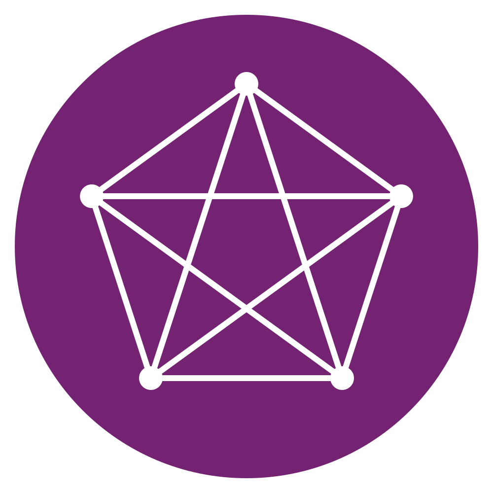
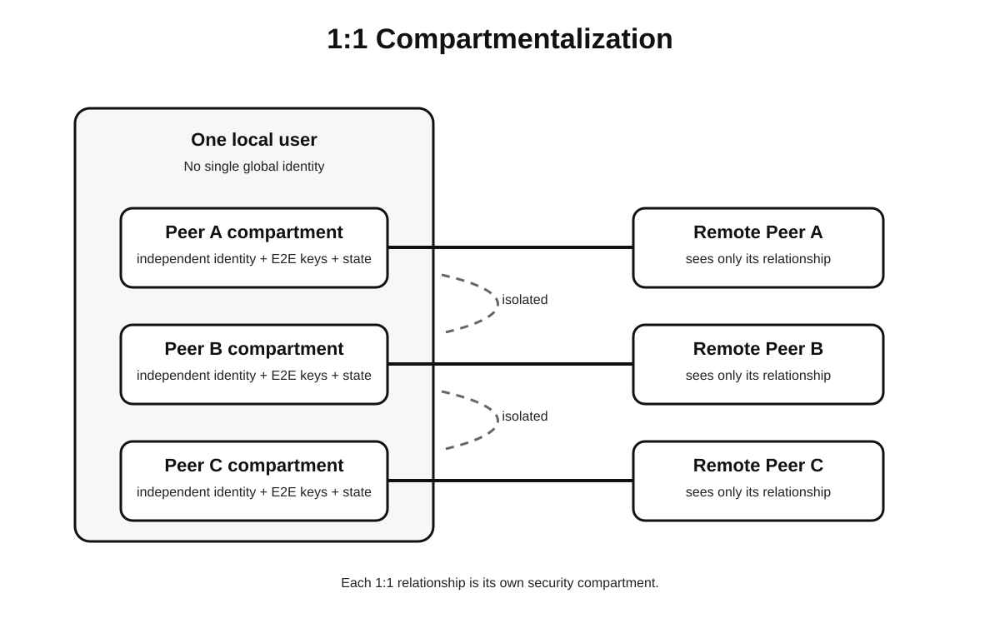
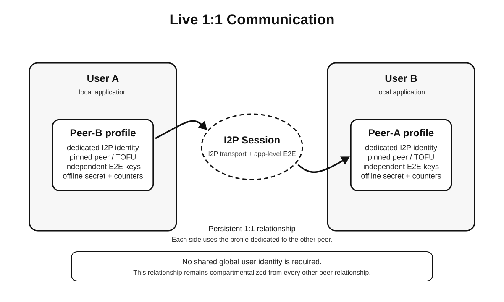
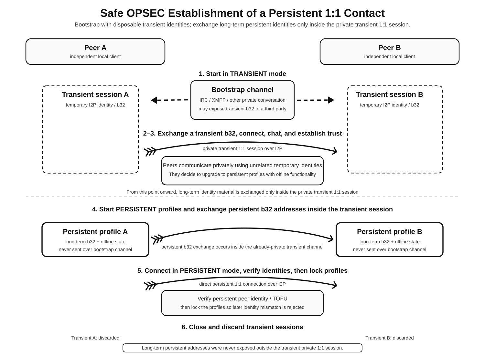
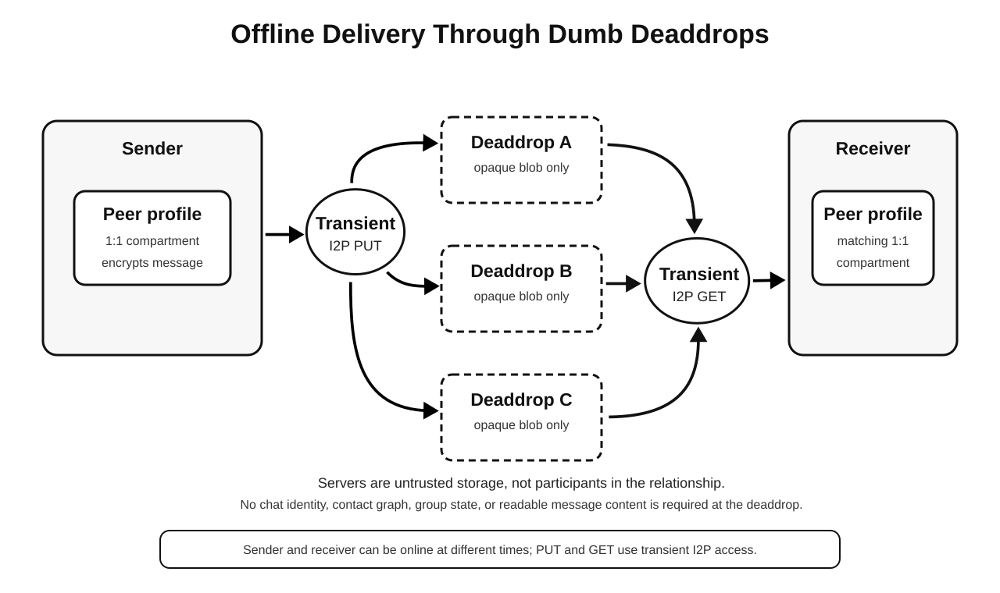
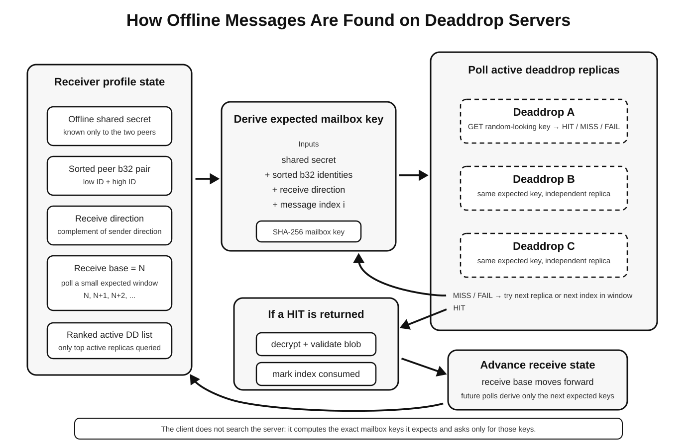
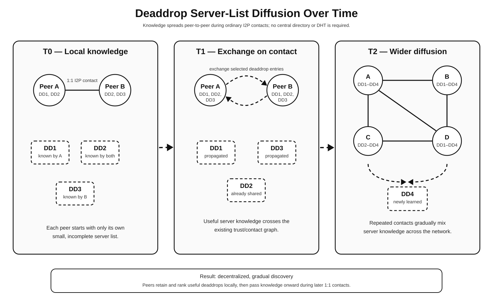
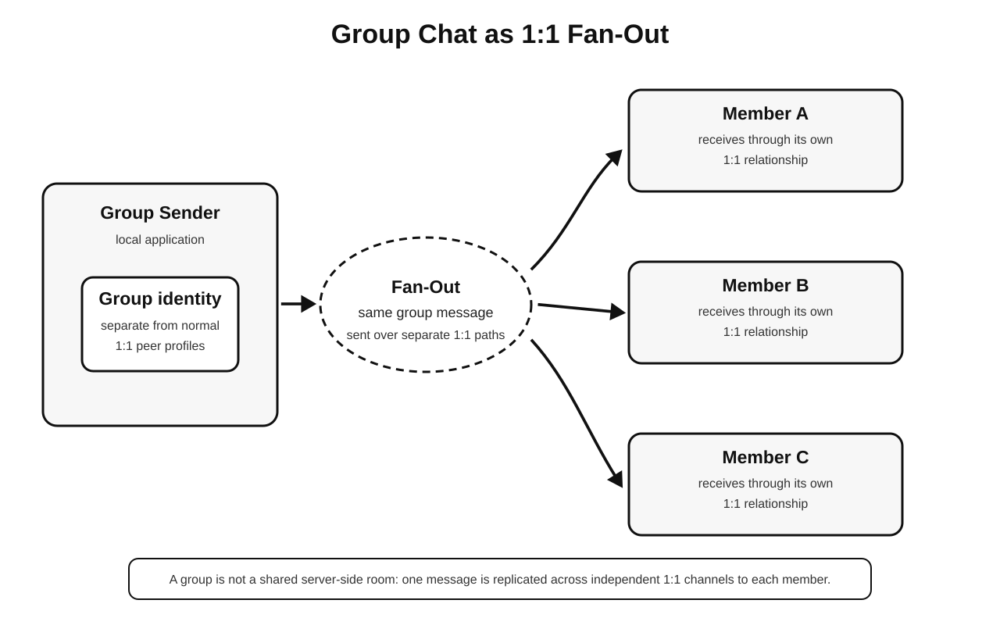
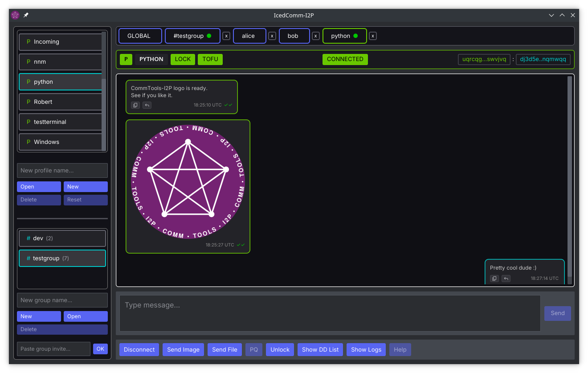
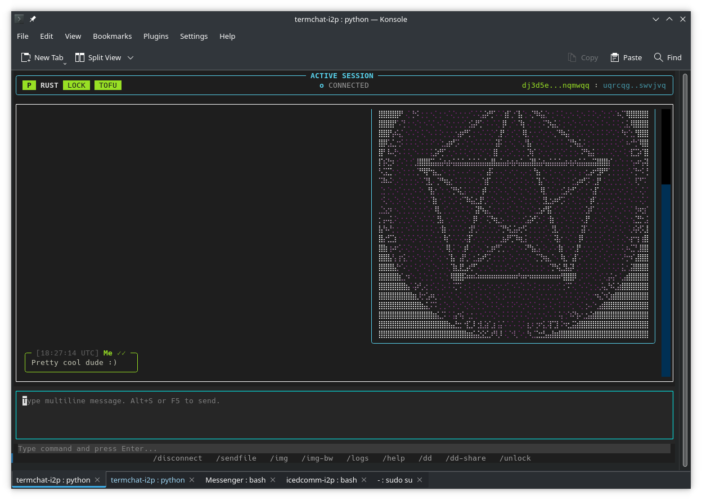

I2P handles the transport
All traffic routes through anonymous I2P cryptographic destinations. Your physical IP address and location are completely isolated from your application identity.
I2P-native communication architecture
CommTools-I2P lets you communicate securely over the I2P network without central servers, account registration, or trackable metadata. By giving every relationship its own isolated cryptographic identity, your chats remain truly private—even when you're offline.
CommTools-I2P is an open, client-side protocol family powering desktop and terminal interfaces. It is not a centralized service, company, or third-party relay network.

Safety comes from separating responsibilities. No single layer of the stack ever holds enough information to track or compromise you.
All traffic routes through anonymous I2P cryptographic destinations. Your physical IP address and location are completely isolated from your application identity.
You don't have one master profile. You use a distinct identity for every contact, preventing third parties from linking your conversations together.
We layer end-to-end encryption, continuous session integrity checks, and peer validation directly on top of I2P to defend against network-level tampering.
Offline messages are stored on untrusted "deaddrops" as encrypted, indecipherable blobs. Servers store messages temporarily without ever knowing who sent them or who receives them.
Long-term relationships do not share one global address. Temporary sessions, persistent one-to-one contacts, and groups occupy distinct identity spaces with separate trust and runtime state.

The architecture uses tailored communication models based on your active security and availability needs.
When both you and your contact are online, messages travel straight between your endpoints over an encrypted I2P stream. No intermediary servers or relays are involved.
When a contact is offline, messages are encrypted and temporarily held on decentralized "deaddrop" servers using transient keys, eliminating durable server-side metadata.
Groups operate as direct member-to-member mesh networks without central room servers. Messages fan out directly to each member using dedicated group identities.
A live conversation combines I2P destination authenticity with profile-level peer validation and an encrypted application session. No CommTools-I2P relay is required while both peers are online.

First impressions shouldn't require giving away your permanent identity. You can initiate contact over a temporary, disposable session. Once you verify each other's credentials, you exchange permanent key pairs inside that private session and discard the temporary link.

Offline delivery is asynchronous and independent of the live stream. The sender replicates an encrypted opaque blob to several deaddrops, and the receiver retrieves it later. PUT and GET operations use transient I2P access identities, while the stable relationship remains inside the matching endpoint profiles.

You never ask a server, "Do I have messages?"—doing so leaks your identity. Instead, your local app derives a mathematically unique lookup key for each expected message, fetches that exact encrypted blob from the network, and unpacks it locally.

There is no global registry of relay servers. Instead, your client discovers reliable deaddrop nodes organically as you chat with trusted peers. Your client tests these nodes locally, ranks them by reliability, and shares the best ones with your contacts over time.

A group is not represented by a provider-hosted room. A participant uses a dedicated group identity and sends the same message over separate direct member paths. Membership and roster authority remain group concerns, isolated from persistent one-to-one profiles and their offline state.

By pushing all trust and cryptography to your personal device, CommTools-I2P radically reduces what outside networks can see.
Realistic Security Notice: CommTools-I2P eliminates central points of surveillance, but it cannot protect against malware on an already compromised device, device theft without local encryption, or user errors during initial key verification.
CommTools-I2P is a core specification that powers native clients across different operating systems while preserving the exact same communication boundaries.
A clean, modern desktop application written in Rust and Iced for graphical desktop environments.
View Source on GitHub →
A lightweight, keyboard-driven Python client built for command-line power users and headless systems.
View Source on GitHub →